Code
library(mirt)
library(psych)EDUC 8720
The IRT models we have examined so far have been designed for dichotomously scored items—items with exactly two scored outcomes (e.g., correct/incorrect). Many assessment contexts, however, involve polytomous items: items scored into three or more categories. Examples include:
A fundamental question is whether the response categories are ordinal (ordered in terms of the trait) or nominal (unordered, distinct options). This distinction determines which family of polytomous IRT model is appropriate.
Mellenbergh (1995) provided a useful taxonomy of polytomous IRT models based on how they relate category probabilities to the latent trait:
Adjacent-category models: The model is built from the ratio of probabilities of responding in adjacent categories (e.g., category \(k\) vs. category \(k+1\)). These are sometimes called “divide-by-total” models (Thissen & Steinberg, 1986). This family includes the Partial Credit Model (PCM), Generalized Partial Credit Model (GPCM), and Rating Scale Model (RSM).
Cumulative models: The model is built from the cumulative probability of responding at or above a given category. This family includes the Graded Response Model (GRM).
Nominal models: No assumed ordering of categories. The Nominal Response Model (NRM) falls here.
The key polytomous IRT models were developed over a 25-year span:
| Year | Model | Developer |
|---|---|---|
| 1969 | Graded Response Model (GRM) | Fumiko Samejima |
| 1972 | Nominal Response Model (NRM) | R. Darrell Bock |
| 1978 | Rating Scale Model (RSM) | David Andrich |
| 1982 | Partial Credit Model (PCM) | Geoff Masters |
| 1992 | Generalized Partial Credit Model (GPCM) | Eiji Muraki |
In this tutorial we will present these models in an order that emphasizes their conceptual relationships: PCM → GPCM → RSM → GRM → NRM.
library(mirt)
library(psych)We use the Verbal Aggression dataset, which has been widely used in IRT textbooks and articles (e.g., de Boeck & Wilson, 2004). The data come from a study of \(N = 316\) Belgian undergraduate students who rated their reactions to frustrating situations.
Each item is a combination of three facets:
This creates \(4 \times 2 \times 3 = 24\) items. Items are scored: 0 = no, 1 = perhaps, 2 = yes.
The two “other to blame” situations (bus, train) might be expected to elicit more verbal aggression than the two “self to blame” situations (store, call). Similarly, “want to” items should generally be easier to endorse than “do” items.
d <- read.csv("verbagg_wide.csv")
cat("Dimensions:", nrow(d), "respondents x", ncol(d), "items\n")Dimensions: 316 respondents x 24 items# Create a reference table for the 24 items
item_info <- data.frame(
Item = 1:24,
Name = names(d),
Situation = rep(c("bus", "train", "store", "call"), each = 6),
Blame = rep(c("other", "other", "self", "self"), each = 6),
Mode = rep(c("want", "do"), 12),
Type = rep(rep(c("curse", "scold", "shout"), each = 2), 4)
)
knitr::kable(item_info, caption = "Structure of the 24 Verbal Aggression Items")| Item | Name | Situation | Blame | Mode | Type |
|---|---|---|---|---|---|
| 1 | i1_bus_want_curse | bus | other | want | curse |
| 2 | i2_bus_do_curse | bus | other | do | curse |
| 3 | i3_bus_want_scold | bus | other | want | scold |
| 4 | i4_bus_do_scold | bus | other | do | scold |
| 5 | i5_bus_want_shout | bus | other | want | shout |
| 6 | i6_bus_do_shout | bus | other | do | shout |
| 7 | i7_train_want_curse | train | other | want | curse |
| 8 | i8_train_do_curse | train | other | do | curse |
| 9 | i9_train_want_scold | train | other | want | scold |
| 10 | i10_train_do_scold | train | other | do | scold |
| 11 | i11_train_want_shout | train | other | want | shout |
| 12 | i12_train_do_shout | train | other | do | shout |
| 13 | i13_store_want_curse | store | self | want | curse |
| 14 | i14_store_do_curse | store | self | do | curse |
| 15 | i15_store_want_scold | store | self | want | scold |
| 16 | i16_store_do_scold | store | self | do | scold |
| 17 | i17_store_want_shout | store | self | want | shout |
| 18 | i18_store_do_shout | store | self | do | shout |
| 19 | i19_call_want_curse | call | self | want | curse |
| 20 | i20_call_do_curse | call | self | do | curse |
| 21 | i21_call_want_scold | call | self | want | scold |
| 22 | i22_call_do_scold | call | self | do | scold |
| 23 | i23_call_want_shout | call | self | want | shout |
| 24 | i24_call_do_shout | call | self | do | shout |
As we fit different models to these data, we will return to these substantive questions:
# Response category frequencies for each item
cat_freq <- apply(d, 2, function(x) table(factor(x, levels = 0:2)))
cat_freq_df <- as.data.frame(t(cat_freq))
names(cat_freq_df) <- c("No (0)", "Perhaps (1)", "Yes (2)")
cat_freq_df$Item <- 1:24
cat_freq_df$Name <- names(d)
cat_freq_df <- cat_freq_df[, c("Item", "Name", "No (0)", "Perhaps (1)", "Yes (2)")]
knitr::kable(cat_freq_df, caption = "Response Category Frequencies by Item", row.names = FALSE)| Item | Name | No (0) | Perhaps (1) | Yes (2) |
|---|---|---|---|---|
| 1 | i1_bus_want_curse | 91 | 95 | 130 |
| 2 | i2_bus_do_curse | 91 | 108 | 117 |
| 3 | i3_bus_want_scold | 126 | 86 | 104 |
| 4 | i4_bus_do_scold | 136 | 97 | 83 |
| 5 | i5_bus_want_shout | 154 | 99 | 63 |
| 6 | i6_bus_do_shout | 208 | 68 | 40 |
| 7 | i7_train_want_curse | 67 | 112 | 137 |
| 8 | i8_train_do_curse | 109 | 97 | 110 |
| 9 | i9_train_want_scold | 118 | 93 | 105 |
| 10 | i10_train_do_scold | 162 | 92 | 62 |
| 11 | i11_train_want_shout | 158 | 84 | 74 |
| 12 | i12_train_do_shout | 238 | 53 | 25 |
| 13 | i13_store_want_curse | 128 | 120 | 68 |
| 14 | i14_store_do_curse | 171 | 108 | 37 |
| 15 | i15_store_want_scold | 198 | 90 | 28 |
| 16 | i16_store_do_scold | 239 | 61 | 16 |
| 17 | i17_store_want_shout | 240 | 63 | 13 |
| 18 | i18_store_do_shout | 287 | 25 | 4 |
| 19 | i19_call_want_curse | 98 | 127 | 91 |
| 20 | i20_call_do_curse | 118 | 117 | 81 |
| 21 | i21_call_want_scold | 179 | 88 | 49 |
| 22 | i22_call_do_scold | 181 | 91 | 44 |
| 23 | i23_call_want_shout | 217 | 64 | 35 |
| 24 | i24_call_do_shout | 259 | 43 | 14 |
# Total score distribution
tot <- rowSums(d)
hist(tot, breaks = seq(-0.5, max(tot) + 0.5, 1), las = 1, col = "steelblue",
main = "Distribution of Total Scores", xlab = "Total Score (0–48)",
ylab = "Frequency", border = "white")
abline(v = mean(tot), col = "red", lwd = 2, lty = 2)
legend("topright", legend = paste("Mean =", round(mean(tot), 1)),
col = "red", lty = 2, lwd = 2, bty = "n")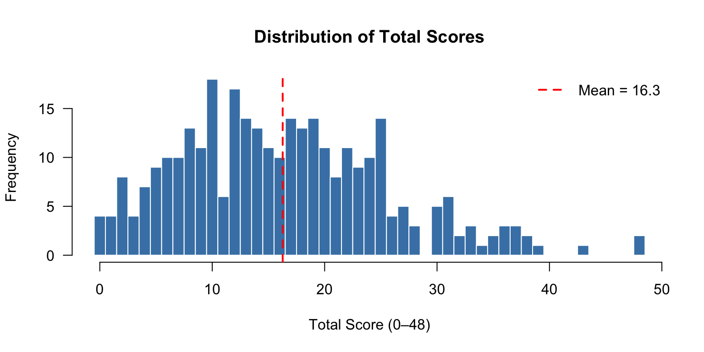
# Item means (analogous to classical difficulty)
item_means <- colMeans(d)
barplot(item_means, names.arg = 1:24, las = 1, col = "steelblue",
main = "Item Means (Higher = More Verbal Aggression Endorsed)",
xlab = "Item", ylab = "Mean Score (0–2)", ylim = c(0, 2),
border = "white")
# Add reference lines for want vs. do
abline(h = mean(item_means[item_info$Mode == "want"]), col = "red", lty = 2)
abline(h = mean(item_means[item_info$Mode == "do"]), col = "blue", lty = 2)
legend("topright", legend = c("Mean: Want items", "Mean: Do items"),
col = c("red", "blue"), lty = 2, lwd = 1.5, bty = "n", cex = 0.8)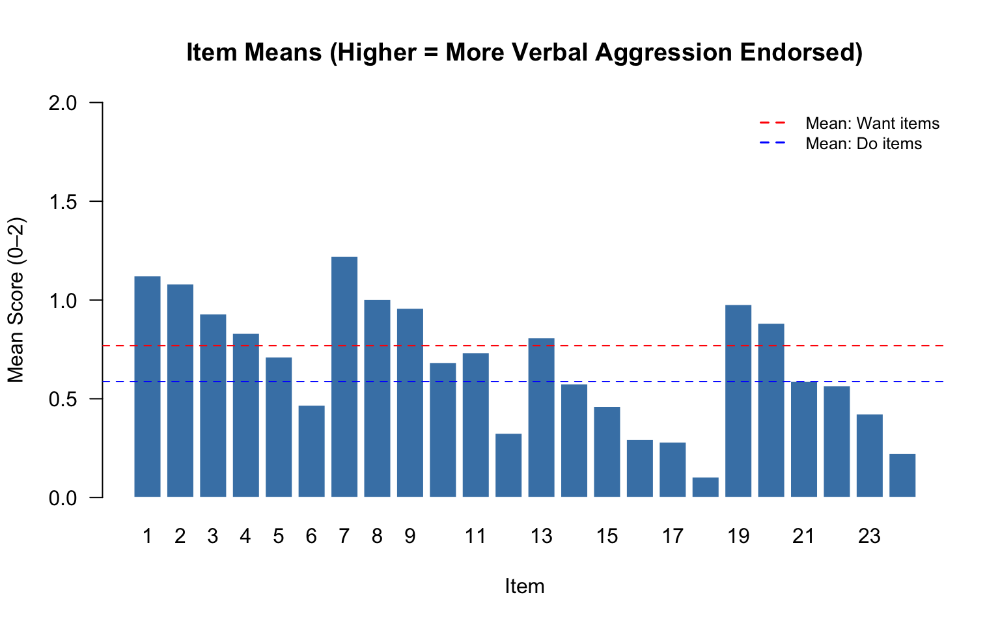
Before fitting any IRT model, we should check the assumption that a single latent trait underlies the item responses.
fa.parallel(d, n.obs = nrow(d), fm = "minres", fa = "fa",
main = "Parallel Analysis Scree Plot",
n.iter = 100, error.bars = FALSE, SMC = FALSE,
ylabel = NULL, show.legend = TRUE)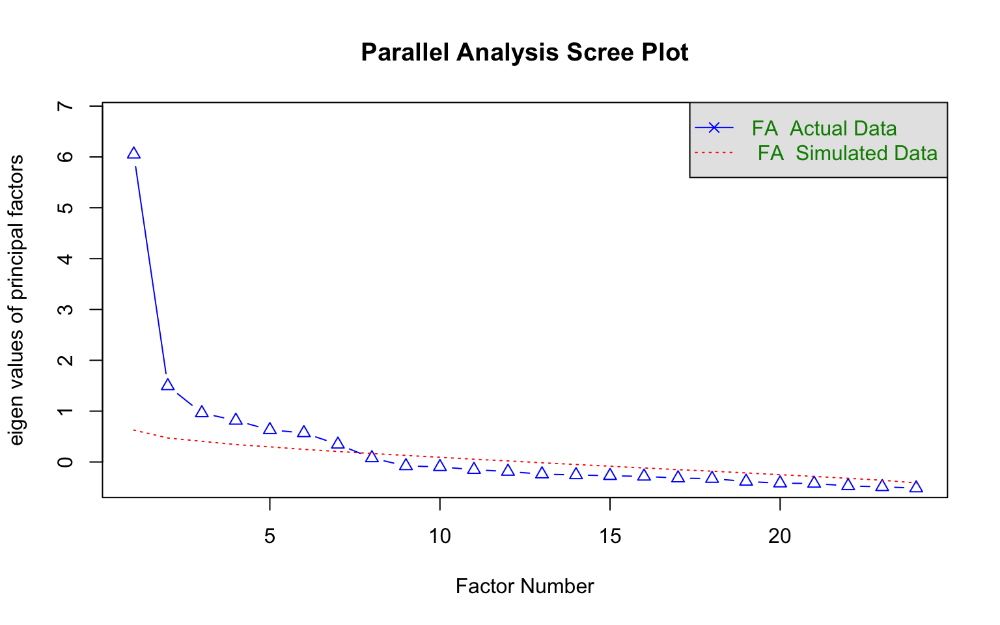
Parallel analysis suggests that the number of factors = 7 and the number of components = NA The parallel analysis provides a screen for how many factors are supported by the data. For polytomous IRT models to be appropriate, we need evidence of a dominant first factor. A large gap between the first eigenvalue and the rest (and the parallel analysis reference line) supports the unidimensionality assumption.
# Check that all categories are used for each item
min_freq <- apply(d, 2, function(x) min(table(factor(x, levels = 0:2))))
cat("Minimum category frequency across items:", min(min_freq), "\n")Minimum category frequency across items: 4 cat("Items where minimum category count < 20:",
paste(which(min_freq < 20), collapse = ", "), "\n")Items where minimum category count < 20: 16, 17, 18, 24 The Partial Credit Model (Masters, 1982) is a Rasch-family model for ordered polytomous responses. For an item with \(m+1\) response categories (scored \(0, 1, \ldots, m\)), the PCM specifies:
\[P(X_{ij} = k \mid \theta_j) = \frac{\exp\left(\sum_{v=0}^{k}(\theta_j - b_{iv})\right)}{\sum_{r=0}^{m}\exp\left(\sum_{v=0}^{r}(\theta_j - b_{iv})\right)}\]
where \(b_{iv}\) are the Andrich threshold parameters (with \(b_{i0} \equiv 0\) by convention). Each item has \(m\) threshold parameters that indicate the points on the trait continuum where adjacent categories are equally likely.
Key properties of the PCM:
pcm <- mirt(d, 1, itemtype = "Rasch")pcm_pars <- coef(pcm, IRTpars = TRUE, simplify = TRUE)$items
colnames(pcm_pars) <- c("a", "b1", "b2")
knitr::kable(round(pcm_pars, 3),
caption = "PCM Parameter Estimates (Andrich Thresholds)")| a | b1 | b2 | |
|---|---|---|---|
| i1_bus_want_curse | 1 | -0.421 | -0.085 |
| i2_bus_do_curse | 1 | -0.529 | 0.177 |
| i3_bus_want_scold | 1 | 0.130 | 0.151 |
| i4_bus_do_scold | 1 | 0.141 | 0.563 |
| i5_bus_want_shout | 1 | 0.316 | 0.943 |
| i6_bus_do_shout | 1 | 1.145 | 1.195 |
| i7_train_want_curse | 1 | -0.971 | -0.026 |
| i8_train_do_curse | 1 | -0.184 | 0.175 |
| i9_train_want_scold | 1 | -0.034 | 0.205 |
| i10_train_do_scold | 1 | 0.459 | 0.902 |
| i11_train_want_shout | 1 | 0.497 | 0.593 |
| i12_train_do_shout | 1 | 1.624 | 1.554 |
| i13_store_want_curse | 1 | -0.127 | 1.003 |
| i14_store_do_curse | 1 | 0.414 | 1.681 |
| i15_store_want_scold | 1 | 0.818 | 1.869 |
| i16_store_do_scold | 1 | 1.512 | 2.210 |
| i17_store_want_shout | 1 | 1.494 | 2.481 |
| i18_store_do_shout | 1 | 2.756 | 3.083 |
| i19_call_want_curse | 1 | -0.558 | 0.662 |
| i20_call_do_curse | 1 | -0.226 | 0.752 |
| i21_call_want_scold | 1 | 0.661 | 1.163 |
| i22_call_do_scold | 1 | 0.651 | 1.326 |
| i23_call_want_shout | 1 | 1.277 | 1.308 |
| i24_call_do_shout | 1 | 1.995 | 2.069 |
In the PCM, each item has two threshold parameters (\(b_1\) and \(b_2\)) since there are three categories. The \(a\) parameter is fixed at 1 for all items (Rasch constraint).
# Threshold distances (b2 - b1) for each item
thresh_dist <- pcm_pars[, "b2"] - pcm_pars[, "b1"]
par(mar = c(4, 11, 3, 1))
barplot(thresh_dist[order(thresh_dist)], horiz = TRUE,
names.arg = rownames(pcm_pars)[order(thresh_dist)],
las = 1, col = "steelblue", border = "white",
main = "Threshold Distance (b2 - b1) by Item",
xlab = "Distance between thresholds")
abline(v = 0, col = "red", lty = 2)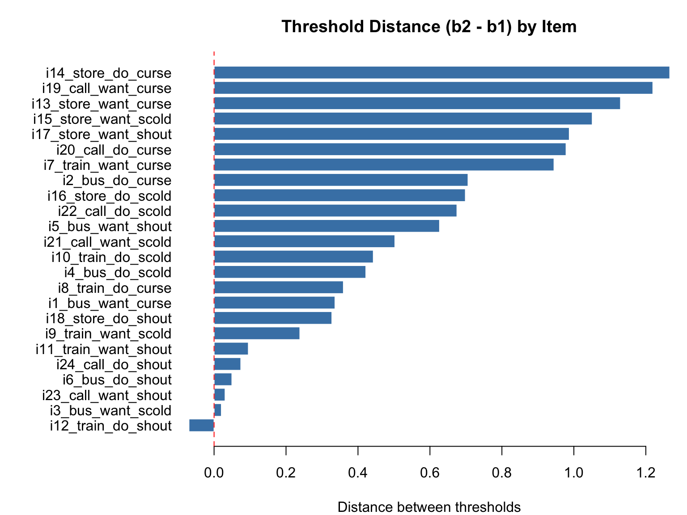
Items with larger threshold distances have a wider region of \(\theta\) where the middle category (“perhaps”) is the most probable response. Items with very small or negative threshold distances may indicate problems with the middle category.
The Category Response Curves (CRCs) show the probability of each response category as a function of \(\theta\).
# Show CRCs for two items: a want/do pair
plot(pcm, type = "trace", which.items = c(7, 8),
theta_lim = c(-4, 4), par.settings = simpleTheme(lwd = 2),
main = "PCM Category Response Curves: Item 7 (want) vs. Item 8 (do)")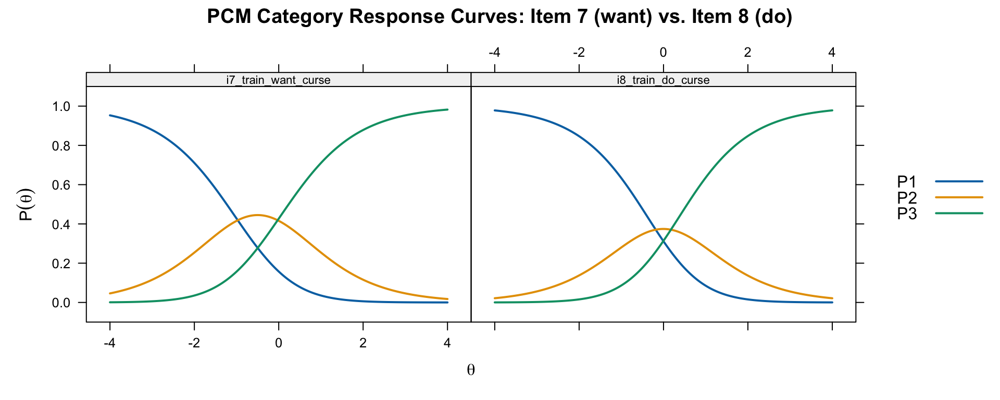
Item 7 is “I miss a train because a clerk gave me faulty information. I would want to curse.” Item 8 is the same situation but “I would curse.” Compare the location and spacing of the thresholds: the “do” item should generally require more verbal aggression (higher \(\theta\)) than the “want” item.
# All 24 items
plot(pcm, type = "trace", theta_lim = c(-4, 4),
par.settings = simpleTheme(lwd = 2),
layout = c(4, 6))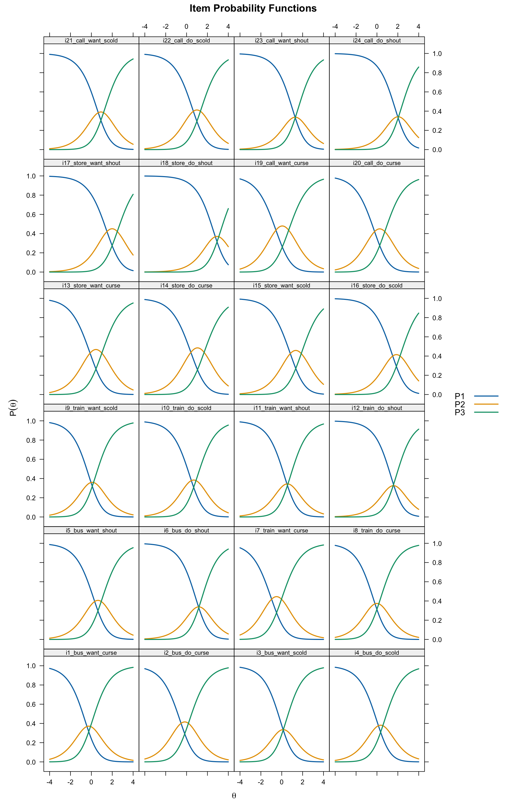
Sometimes the PCM threshold estimates are disordered (i.e., \(b_2 < b_1\)), meaning the second threshold is easier than the first. When this happens, the middle category is never the most probable response for any value of \(\theta\).
reversed <- which(pcm_pars[, "b2"] < pcm_pars[, "b1"])
if (length(reversed) > 0) {
cat("Items with reversed thresholds:", paste(reversed, collapse = ", "), "\n")
cat("These items' middle category ('perhaps') is never the most likely response.\n")
} else {
cat("No threshold reversals detected.\n")
}Items with reversed thresholds: 12
These items' middle category ('perhaps') is never the most likely response.What do reversals indicate? There are two perspectives:
It is important to note that Andrich (2015) also clarifies that threshold parameters are not “steps” in a sequential process. A person does not “step through” categories sequentially to arrive at their response. Rather, the thresholds are difficulty parameters that define the boundaries between adjacent categories on the latent trait continuum.
The Wright map (also called a person-item map) displays the distribution of person abilities alongside item threshold locations on the same scale.
# Custom Wright map: person distribution + item thresholds
theta_est <- fscores(pcm, method = "EAP")[, 1]
layout(matrix(c(1, 2), nrow = 1), widths = c(1, 2))
# Left panel: person distribution
par(mar = c(4, 1, 3, 0))
hist_data <- hist(theta_est, breaks = 30, plot = FALSE)
barplot(hist_data$counts, horiz = TRUE, space = 0, col = "steelblue",
border = "white", axes = FALSE,
main = "Persons")
axis(1)
# Right panel: item thresholds
par(mar = c(4, 4, 3, 1))
plot(NA, xlim = c(-4, 4), ylim = c(0.5, 24.5),
xlab = expression(theta), ylab = "", yaxt = "n",
main = "Item Thresholds (PCM)")
axis(2, at = 1:24, labels = 1:24, las = 1, cex.axis = 0.7)
abline(h = 1:24, col = "grey90")
for (i in 1:24) {
points(pcm_pars[i, "b1"], i, pch = 1, col = "red", cex = 1.2)
points(pcm_pars[i, "b2"], i, pch = 2, col = "blue", cex = 1.2)
}
legend("topright", legend = c("b1 (0|1)", "b2 (1|2)"),
pch = c(1, 2), col = c("red", "blue"), bty = "n")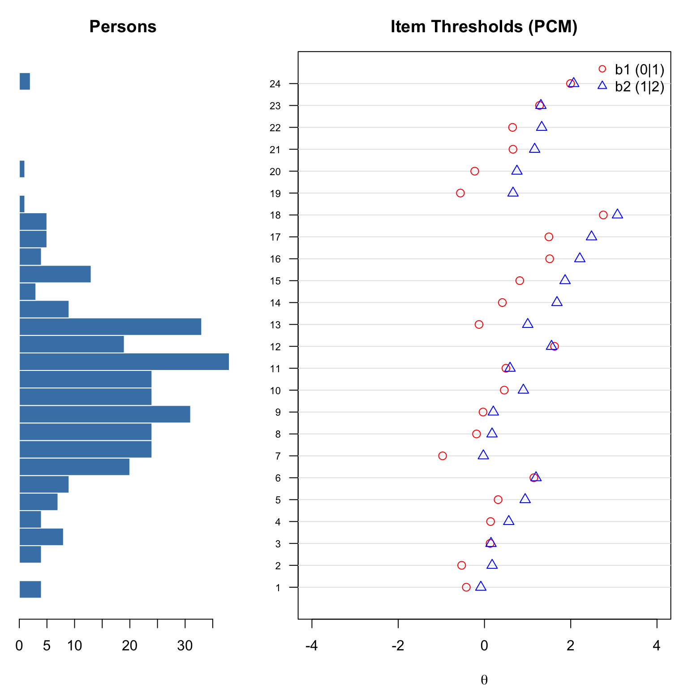
layout(1)One of our motivating questions concerns the difference between “want to” and “do” items. Let’s compare threshold estimates for matched want/do pairs.
# Compare CRCs for want vs. do pairs
# Items 1&2 (bus, curse), 7&8 (train, curse), 9&10 (train, scold), 23&24 (call, shout)
plot(pcm, type = "trace",
which.items = c(1, 2, 7, 8, 9, 10, 23, 24),
theta_lim = c(-4, 4),
par.settings = simpleTheme(lwd = 2),
layout = c(2, 4))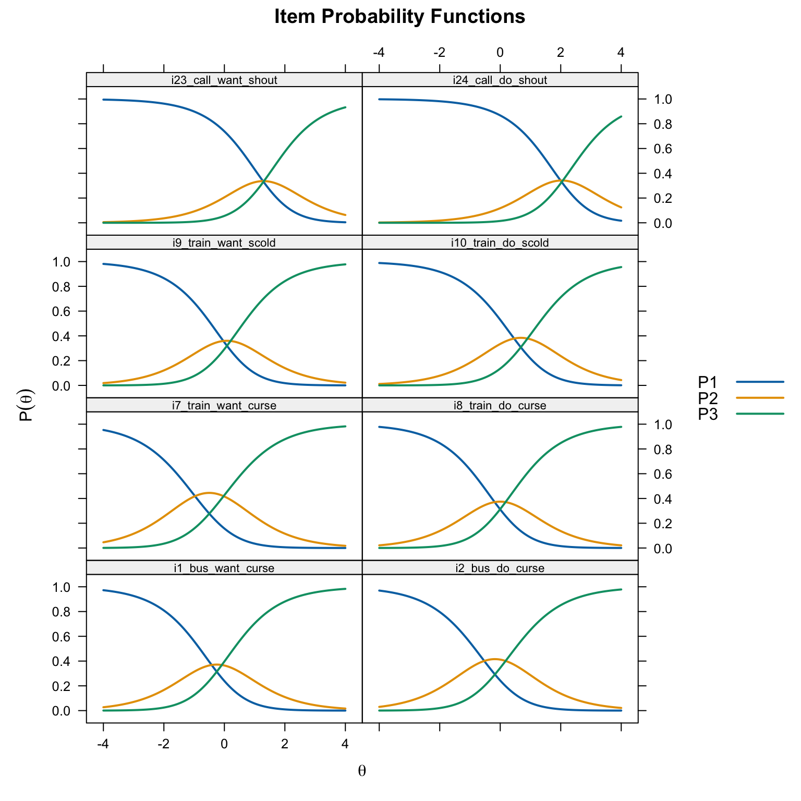
Within each pair, the “do” item (even-numbered) should generally have thresholds located further to the right (higher \(\theta\)) than the “want” item (odd-numbered), reflecting the greater verbal aggression needed to endorse actually doing the behavior vs. merely wanting to.
The Generalized Partial Credit Model (Muraki, 1992) extends the PCM by allowing each item to have its own discrimination parameter (\(a_i\)):
\[P(X_{ij} = k \mid \theta_j) = \frac{\exp\left(\sum_{v=0}^{k} a_i(\theta_j - b_{iv})\right)}{\sum_{r=0}^{m}\exp\left(\sum_{v=0}^{r} a_i(\theta_j - b_{iv})\right)}\]
The GPCM is to the PCM as the 2PL is to the Rasch model for dichotomous items. When all \(a_i = 1\), the GPCM reduces to the PCM.
A note on sufficiency: Andrich (2015) points out that adding item-specific discrimination parameters “destroys sufficiency”—the total score is no longer a sufficient statistic for \(\theta\). From a measurement perspective (as opposed to a statistical modeling perspective), this is a significant trade-off.
gpcm <- mirt(d, 1, itemtype = "gpcm")gpcm_pars <- coef(gpcm, IRTpars = TRUE, simplify = TRUE)$items
colnames(gpcm_pars) <- c("a", "b1", "b2")
knitr::kable(round(gpcm_pars, 3),
caption = "GPCM Parameter Estimates")| a | b1 | b2 | |
|---|---|---|---|
| i1_bus_want_curse | 0.782 | -0.402 | -0.184 |
| i2_bus_do_curse | 1.184 | -0.542 | 0.229 |
| i3_bus_want_scold | 1.011 | 0.120 | 0.175 |
| i4_bus_do_scold | 1.565 | -0.006 | 0.609 |
| i5_bus_want_shout | 0.831 | 0.415 | 1.012 |
| i6_bus_do_shout | 0.917 | 1.251 | 1.241 |
| i7_train_want_curse | 0.871 | -1.036 | -0.054 |
| i8_train_do_curse | 1.158 | -0.227 | 0.233 |
| i9_train_want_scold | 0.919 | -0.010 | 0.201 |
| i10_train_do_scold | 1.536 | 0.262 | 0.886 |
| i11_train_want_shout | 0.873 | 0.596 | 0.603 |
| i12_train_do_shout | 1.169 | 1.436 | 1.542 |
| i13_store_want_curse | 0.645 | -0.055 | 1.235 |
| i14_store_do_curse | 0.883 | 0.479 | 1.809 |
| i15_store_want_scold | 1.018 | 0.812 | 1.884 |
| i16_store_do_scold | 1.228 | 1.296 | 2.094 |
| i17_store_want_shout | 0.865 | 1.696 | 2.685 |
| i18_store_do_shout | 0.974 | 2.830 | 3.164 |
| i19_call_want_curse | 0.740 | -0.614 | 0.745 |
| i20_call_do_curse | 0.925 | -0.223 | 0.788 |
| i21_call_want_scold | 1.111 | 0.595 | 1.161 |
| i22_call_do_scold | 1.207 | 0.542 | 1.284 |
| i23_call_want_shout | 0.686 | 1.824 | 1.470 |
| i24_call_do_shout | 0.899 | 2.193 | 2.172 |
Now each item has its own discrimination (\(a\)) parameter in addition to two thresholds. Items with higher \(a\) values discriminate more sharply between trait levels near the thresholds.
# Plot discrimination parameters
par(mar = c(4, 11, 3, 1))
barplot(sort(gpcm_pars[, "a"]), horiz = TRUE,
names.arg = rownames(gpcm_pars)[order(gpcm_pars[, "a"])],
las = 1, col = "steelblue", border = "white",
main = "GPCM Item Discrimination Parameters",
xlab = "Discrimination (a)")
abline(v = 1, col = "red", lty = 2)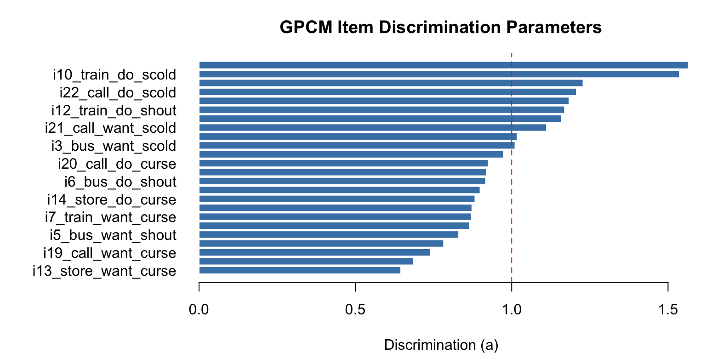
The dashed line at \(a = 1\) represents the PCM constraint. Items above this line discriminate more than assumed by the PCM; items below discriminate less.
# Compare same want/do pairs under GPCM
plot(gpcm, type = "trace",
which.items = c(1, 2, 7, 8, 9, 10, 23, 24),
theta_lim = c(-4, 4),
par.settings = simpleTheme(lwd = 2),
layout = c(2, 4))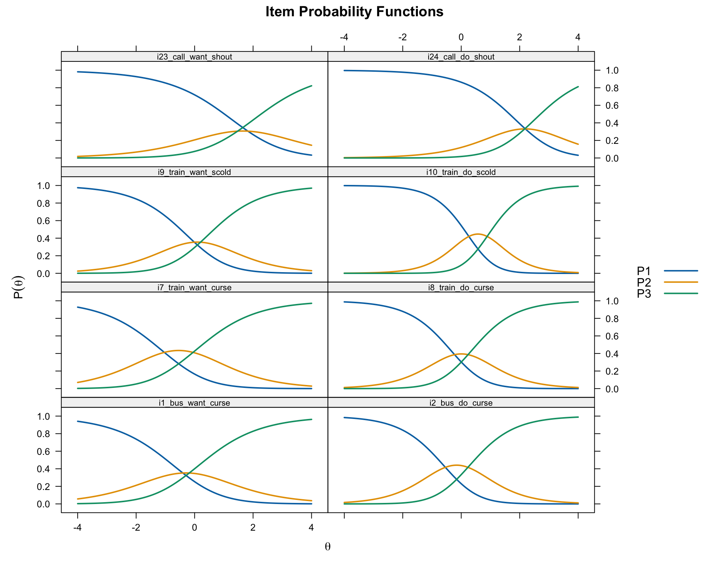
Compare these CRCs to the PCM versions above. Items with high discrimination will have narrower, more peaked curves; items with low discrimination will have flatter, wider curves.
# Check for reversals
gpcm_reversed <- which(gpcm_pars[, "b2"] < gpcm_pars[, "b1"])
if (length(gpcm_reversed) > 0) {
cat("Items with reversed thresholds under GPCM:",
paste(gpcm_reversed, collapse = ", "), "\n")
} else {
cat("No threshold reversals under GPCM.\n")
}Items with reversed thresholds under GPCM: 6, 23, 24 One reason to fit the GPCM when the PCM shows reversals is that the reversals may be an artifact of assuming equal discrimination. If items actually vary in their discrimination, the PCM misattributes this variation, which can distort threshold estimates.
The Rating Scale Model (Andrich, 1978) is a special case of the PCM in which the threshold distances are constrained to be the same across all items. Each item has a single location parameter (\(\lambda_i\)), and the category structure is defined by a common set of threshold parameters (\(\tau_k\)) shared by all items:
\[P(X_{ij} = k \mid \theta_j) = \frac{\exp\left(\sum_{v=0}^{k}(\theta_j - \lambda_i - \tau_v)\right)}{\sum_{r=0}^{m}\exp\left(\sum_{v=0}^{r}(\theta_j - \lambda_i - \tau_v)\right)}\]
The RSM is appropriate when all items share the same response format and the distances between categories can reasonably be assumed equal across items. This is a strong assumption—whether it holds is an empirical question.
Key implication: Under the RSM, the CRCs for all items have the same shape; they are simply shifted left or right along the \(\theta\) axis according to each item’s location parameter.
The RSM is often stated in its log-odds form:
\[\ln\frac{P(X_{ij} = k)}{P(X_{ij} = k-1)} = \theta_j - \lambda_i - \tau_k\]
The category probability equations follow directly from this. Here is the step-by-step derivation for a three-category item (categories 0, 1, 2):
Step 1. Exponentiate both sides for each adjacent pair:
\[\frac{P(X=1)}{P(X=0)} = \exp(\theta_j - \lambda_i - \tau_1), \qquad \frac{P(X=2)}{P(X=1)} = \exp(\theta_j - \lambda_i - \tau_2)\]
Step 2. Rearrange to express higher categories in terms of the one below:
\[P(X=1) = P(X=0) \cdot \exp(\theta_j - \lambda_i - \tau_1)\] \[P(X=2) = P(X=1) \cdot \exp(\theta_j - \lambda_i - \tau_2)\]
Step 3. Substitute the expression for \(P(X=1)\) into \(P(X=2)\):
\[P(X=2) = P(X=0) \cdot \exp(\theta_j - \lambda_i - \tau_1) \cdot \exp(\theta_j - \lambda_i - \tau_2) = P(X=0) \cdot \exp(2\theta_j - 2\lambda_i - \tau_1 - \tau_2)\]
Step 4. Use the requirement that all probabilities sum to 1:
\[P(X=0)\left[1 + \exp(\theta_j - \lambda_i - \tau_1) + \exp(2\theta_j - 2\lambda_i - \tau_1 - \tau_2)\right] = 1\]
Defining \(\Psi\) as the bracketed denominator, we get \(P(X=0) = 1/\Psi\), \(P(X=1) = \exp(\theta_j - \lambda_i - \tau_1)/\Psi\), and \(P(X=2) = \exp(2\theta_j - 2\lambda_i - \tau_1 - \tau_2)/\Psi\).
The key insight from Step 3 is that each additional category requires multiplying in one more log-odds term. This is why the exponent for category \(k\) contains \(k\) copies of \(\theta_j\) and \(\lambda_i\), and accumulates all \(\tau\) parameters up through \(\tau_k\).
rsm <- mirt(d, 1, itemtype = "rsm")rsm_pars <- as.data.frame(coef(rsm, simplify = TRUE)$items)In mirt’s RSM output (without IRTpars = TRUE), the columns are:
b1 = \(\tau_1\): the first common Andrich threshold (same for all items)b2 = \(\tau_2\): the second common Andrich threshold (same for all items)c = \(-\lambda_i\): the item-specific location parameter (varies by item)To recover the adjacent category intersection thresholds (\(t_k = \lambda_i + \tau_k\)) for each item, we use \(t_k = -c_i + b_k\):
rsm_thresh <- data.frame(
t1 = -rsm_pars[, "c"] + rsm_pars[, "b1"],
t2 = -rsm_pars[, "c"] + rsm_pars[, "b2"]
)
knitr::kable(round(rsm_thresh, 3),
caption = "RSM Andrich Threshold Estimates")| t1 | t2 |
|---|---|
| -0.552 | 0.028 |
| -0.464 | 0.116 |
| -0.143 | 0.438 |
| 0.067 | 0.648 |
| 0.334 | 0.915 |
| 0.952 | 1.532 |
| -0.766 | -0.185 |
| -0.297 | 0.284 |
| -0.203 | 0.378 |
| 0.400 | 0.980 |
| 0.284 | 0.864 |
| 1.418 | 1.999 |
| 0.115 | 0.696 |
| 0.661 | 1.242 |
| 0.970 | 1.551 |
| 1.543 | 2.123 |
| 1.595 | 2.176 |
| 2.712 | 3.293 |
| -0.243 | 0.337 |
| -0.042 | 0.539 |
| 0.629 | 1.210 |
| 0.685 | 1.266 |
| 1.084 | 1.665 |
| 1.861 | 2.442 |
Under the RSM, the distance between thresholds (\(t_2 - t_1 = \tau_2 - \tau_1\)) is the same for all items—only the overall item location \(\lambda_i\) shifts them left or right. Compare the t2 - t1 column: it should be constant across all 24 items (within rounding).
# Item locations: λᵢ = -cᵢ (midpoint of the two thresholds when τ₁ + τ₂ = 0)
rsm_locations <- -rsm_pars[, "c"]# Compare same want/do pair under RSM
plot(rsm, type = "trace", which.items = c(7, 8),
theta_lim = c(-4, 4), par.settings = simpleTheme(lwd = 2),
main = "RSM Category Response Curves: Item 7 vs. Item 8")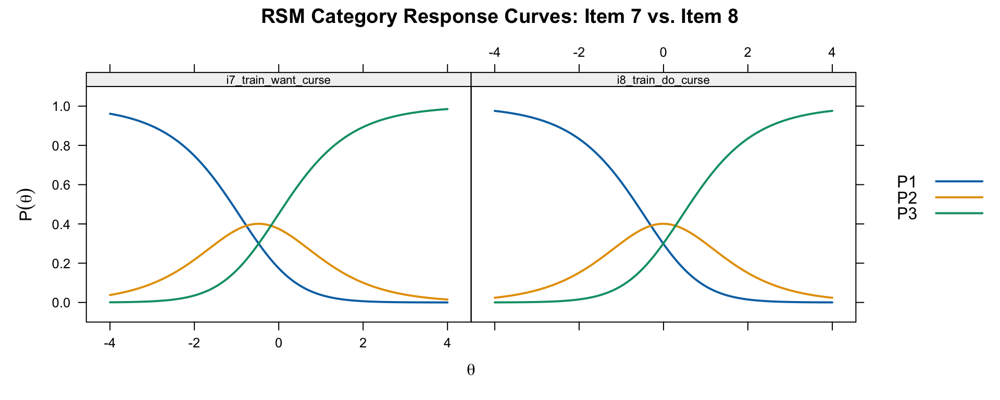
Notice that the CRCs have the same shape for both items—they differ only in their horizontal location. This is the defining property of the RSM.
# Custom Wright map for RSM
theta_est_rsm <- fscores(rsm, method = "EAP")[, 1]
# rsm_thresh (t1, t2) already computed correctly above
layout(matrix(c(1, 2), nrow = 1), widths = c(1, 2))
# Left panel: person distribution
par(mar = c(4, 1, 3, 0))
hist_data <- hist(theta_est_rsm, breaks = 30, plot = FALSE)
barplot(hist_data$counts, horiz = TRUE, space = 0, col = "steelblue",
border = "white", axes = FALSE,
main = "Persons")
axis(1)
# Right panel: item thresholds
par(mar = c(4, 4, 3, 1))
plot(NA, xlim = c(-4, 4), ylim = c(0.5, 24.5),
xlab = expression(theta), ylab = "", yaxt = "n",
main = "Item Thresholds (RSM)")
axis(2, at = 1:24, labels = 1:24, las = 1, cex.axis = 0.7)
abline(h = 1:24, col = "grey90")
for (i in 1:24) {
points(rsm_thresh[i, "t1"], i, pch = 1, col = "red", cex = 1.2)
points(rsm_thresh[i, "t2"], i, pch = 2, col = "blue", cex = 1.2)
}
legend("topright", legend = c("t1 (0|1)", "t2 (1|2)"),
pch = c(1, 2), col = c("red", "blue"), bty = "n")layout(1)Compare this to the PCM Wright map. Under the RSM, the distance between each item’s thresholds is constant, so the map has a more regular appearance.
anova(rsm, pcm) AIC SABIC HQ BIC logLik X2 df p
rsm 12743.68 12758.86 12782.69 12841.33 -6345.840
pcm 12737.47 12766.08 12810.99 12921.50 -6319.733 52.214 23 0This likelihood ratio test compares the constrained RSM (equal threshold distances) to the more flexible PCM (item-specific threshold distances). A significant result suggests the PCM provides a meaningfully better fit, and the RSM’s constraint is too restrictive for these data.
The Graded Response Model (Samejima, 1969) takes a fundamentally different approach from the adjacent-category models above. Rather than modeling the probability of one category vs. an adjacent category, the GRM models the cumulative probability of responding at or above each category threshold.
For each item, the GRM first estimates \(m\) operating characteristic curves (OCCs):
\[P^*_{ik}(\theta) = \frac{\exp[a_i(\theta - b_{ik})]}{1 + \exp[a_i(\theta - b_{ik})]}\]
where \(b_{ik}\) is the Thurstonian threshold—the \(\theta\) value where there is a 50% chance of responding at or above category \(k\). These OCCs are simply 2PL curves.
The probability of responding in a specific category is then obtained by subtraction:
\[P(X_{ij} = k \mid \theta_j) = P^*_{ik}(\theta) - P^*_{i,k+1}(\theta)\]
with the boundary conditions \(P^*_{i0}(\theta) = 1\) and \(P^*_{i,m+1}(\theta) = 0\).
Key distinction: The GRM thresholds (\(b_{ik}\)) are “Thurstonian” thresholds—they represent the \(\theta\) where the cumulative probability equals 0.50. These are not the same as the “Andrich” thresholds in the PCM/RSM, which represent the \(\theta\) where two adjacent categories are equally likely. This is an important conceptual difference that can lead to confusion when comparing across models.
Important property: In the GRM, the thresholds are always ordered (\(b_{i1} < b_{i2} < \ldots < b_{im}\)) by mathematical necessity. This contrasts with the PCM, where threshold reversals are possible and diagnostically meaningful.
grm <- mirt(d, 1, itemtype = "graded")grm_pars <- coef(grm, IRTpars = TRUE, simplify = TRUE)$items
colnames(grm_pars) <- c("a", "b1", "b2")
knitr::kable(round(grm_pars, 3),
caption = "GRM Parameter Estimates (Thurstonian Thresholds)")| a | b1 | b2 | |
|---|---|---|---|
| i1_bus_want_curse | 1.201 | -0.947 | 0.380 |
| i2_bus_do_curse | 1.526 | -0.807 | 0.495 |
| i3_bus_want_scold | 1.484 | -0.391 | 0.647 |
| i4_bus_do_scold | 2.015 | -0.201 | 0.825 |
| i5_bus_want_shout | 1.137 | -0.045 | 1.515 |
| i6_bus_do_shout | 1.340 | 0.660 | 1.860 |
| i7_train_want_curse | 1.164 | -1.393 | 0.296 |
| i8_train_do_curse | 1.528 | -0.566 | 0.585 |
| i9_train_want_scold | 1.314 | -0.499 | 0.709 |
| i10_train_do_scold | 1.906 | 0.052 | 1.128 |
| i11_train_want_shout | 1.242 | -0.012 | 1.192 |
| i12_train_do_shout | 1.518 | 1.010 | 2.141 |
| i13_store_want_curse | 0.913 | -0.485 | 1.638 |
| i14_store_do_curse | 1.143 | 0.192 | 2.141 |
| i15_store_want_scold | 1.301 | 0.521 | 2.243 |
| i16_store_do_scold | 1.493 | 1.021 | 2.536 |
| i17_store_want_shout | 1.017 | 1.314 | 3.515 |
| i18_store_do_shout | 1.090 | 2.461 | 4.550 |
| i19_call_want_curse | 0.976 | -0.971 | 1.103 |
| i20_call_do_curse | 1.251 | -0.494 | 1.104 |
| i21_call_want_scold | 1.478 | 0.259 | 1.533 |
| i22_call_do_scold | 1.541 | 0.265 | 1.592 |
| i23_call_want_shout | 0.945 | 0.965 | 2.536 |
| i24_call_do_shout | 1.179 | 1.569 | 3.097 |
The OCCs show the cumulative probability of responding at or above each threshold.
# Custom OCCs (cumulative probability curves) for Items 7 and 8
theta_seq <- seq(-4, 4, length.out = 200)
par(mfrow = c(1, 2))
for (item in c(7, 8)) {
a <- grm_pars[item, "a"]
b1 <- grm_pars[item, "b1"]
b2 <- grm_pars[item, "b2"]
# P*(theta) = probability of responding at or above category k
p_star1 <- 1 / (1 + exp(-a * (theta_seq - b1)))
p_star2 <- 1 / (1 + exp(-a * (theta_seq - b2)))
plot(theta_seq, p_star1, type = "l", col = "red", lwd = 2,
xlab = expression(theta), ylab = "Cumulative Probability",
main = paste("GRM OCCs: Item", item),
ylim = c(0, 1), las = 1)
lines(theta_seq, p_star2, col = "blue", lwd = 2)
abline(h = 0.5, lty = 3, col = "grey50")
abline(v = c(b1, b2), lty = 2, col = c("red", "blue"))
legend("bottomright",
legend = c(expression(P^"*"*(theta >= 1)),
expression(P^"*"*(theta >= 2))),
col = c("red", "blue"), lwd = 2, bty = "n")
}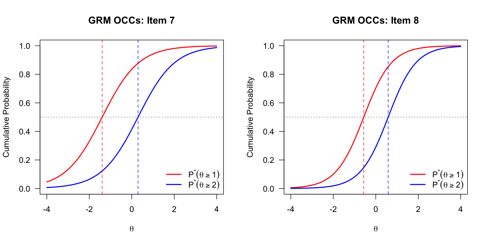
par(mfrow = c(1, 1))# CRCs
plot(grm, type = "trace", which.items = c(7, 8),
theta_lim = c(-4, 4), par.settings = simpleTheme(lwd = 2),
main = "GRM Category Response Curves: Item 7 vs. Item 8")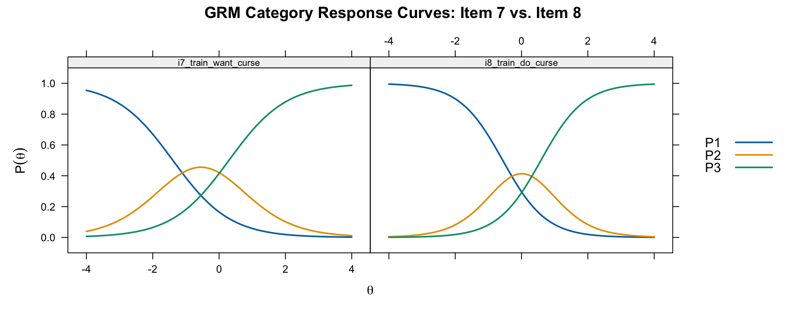
Compare these GRM category response curves to the PCM curves for the same items. Two sources of difference are worth noting. First, because the GRM estimates an item-specific discrimination parameter (\(a_i\)), items with high discrimination will have narrower, more peaked curves than the PCM’s equal-discrimination curves. Second, even holding discrimination constant, the GRM and PCM use fundamentally different mathematical forms—the GRM derives category probabilities by subtracting adjacent cumulative logistic curves, while the PCM uses adjacent-category ratios—and these different forms can produce different CRC shapes and peak locations. Note that the Thurstonian vs. Andrich threshold distinction explains why the numerical parameter values are not directly comparable across the two models, but is not itself the reason the CRCs look different: the curves reflect the fitted probabilities directly, regardless of how the underlying threshold parameters are defined.
# All 24 items
plot(grm, type = "trace", theta_lim = c(-4, 4),
par.settings = simpleTheme(lwd = 2),
layout = c(4, 6))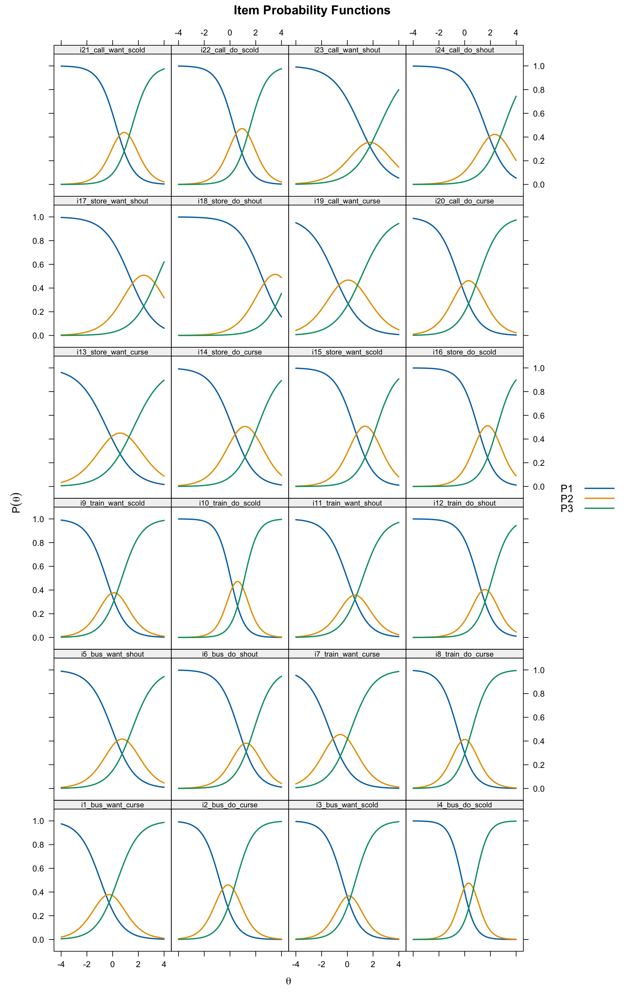
One advantage of the GRM (and other models with item-specific discrimination) is the ability to examine differential item information.
# Test information
plot(grm, type = "info", theta_lim = c(-4, 4))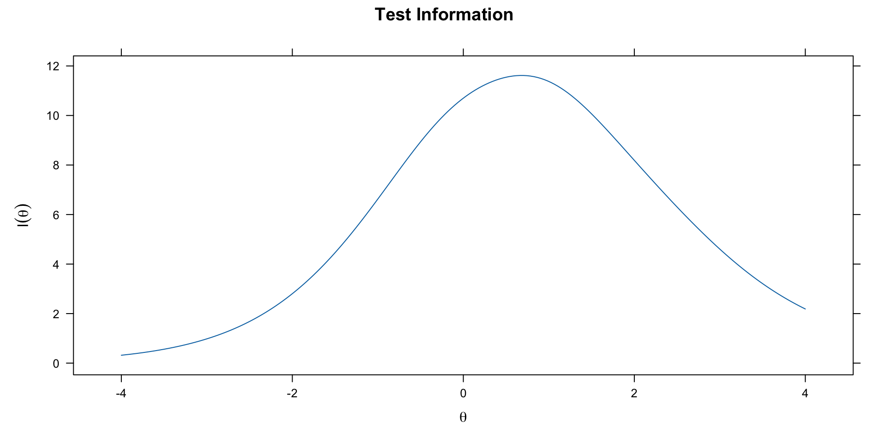
The test information function tells us where on the \(\theta\) scale the test provides the most precise measurement. Items with higher discrimination contribute more information, particularly near their threshold locations.
We can compare nested and non-nested models using information criteria (AIC, BIC) and likelihood ratio tests where appropriate.
# Extract fit indices using anova() on individual models
fit_rsm <- anova(rsm)
fit_pcm <- anova(pcm)
fit_gpcm <- anova(gpcm)
fit_grm <- anova(grm)
fits <- data.frame(
Model = c("RSM", "PCM", "GPCM", "GRM"),
AIC = c(fit_rsm$AIC, fit_pcm$AIC, fit_gpcm$AIC, fit_grm$AIC),
BIC = c(fit_rsm$BIC, fit_pcm$BIC, fit_gpcm$BIC, fit_grm$BIC),
logLik = c(fit_rsm$logLik, fit_pcm$logLik, fit_gpcm$logLik, fit_grm$logLik)
)
knitr::kable(fits, digits = 1, caption = "Model Fit Comparison (lower AIC/BIC = better)")| Model | AIC | BIC | logLik |
|---|---|---|---|
| RSM | 12743.7 | 12841.3 | -6345.8 |
| PCM | 12737.5 | 12921.5 | -6319.7 |
| GPCM | 12741.0 | 13011.4 | -6298.5 |
| GRM | 12715.6 | 12986.0 | -6285.8 |
Nested comparisons:
anova(rsm, pcm) AIC SABIC HQ BIC logLik X2 df p
rsm 12743.68 12758.86 12782.69 12841.33 -6345.840
pcm 12737.47 12766.08 12810.99 12921.50 -6319.733 52.214 23 0anova(pcm, gpcm) AIC SABIC HQ BIC logLik X2 df p
pcm 12737.47 12766.08 12810.99 12921.50 -6319.733
gpcm 12740.99 12783.04 12849.02 13011.41 -6298.497 42.474 23 0.008Note that the GRM is not nested within the PCM/GPCM family—they are based on different response process assumptions. We can still compare them via AIC/BIC.
par(mfrow = c(1, 2))
# Compare b1 across models
plot(pcm_pars[, "b1"], gpcm_pars[, "b1"],
xlab = "PCM b1", ylab = "GPCM b1",
main = "Threshold 1: PCM vs. GPCM", pch = 16, col = "steelblue")
abline(0, 1, lty = 2, col = "red")
text(pcm_pars[, "b1"], gpcm_pars[, "b1"], labels = 1:24, pos = 3, cex = 0.7)
r1 <- cor(pcm_pars[, "b1"], gpcm_pars[, "b1"])
legend("topleft", legend = paste("r =", round(r1, 3)), bty = "n")
# Compare b2 across models
plot(pcm_pars[, "b2"], gpcm_pars[, "b2"],
xlab = "PCM b2", ylab = "GPCM b2",
main = "Threshold 2: PCM vs. GPCM", pch = 16, col = "steelblue")
abline(0, 1, lty = 2, col = "red")
text(pcm_pars[, "b2"], gpcm_pars[, "b2"], labels = 1:24, pos = 3, cex = 0.7)
r2 <- cor(pcm_pars[, "b2"], gpcm_pars[, "b2"])
legend("topleft", legend = paste("r =", round(r2, 3)), bty = "n")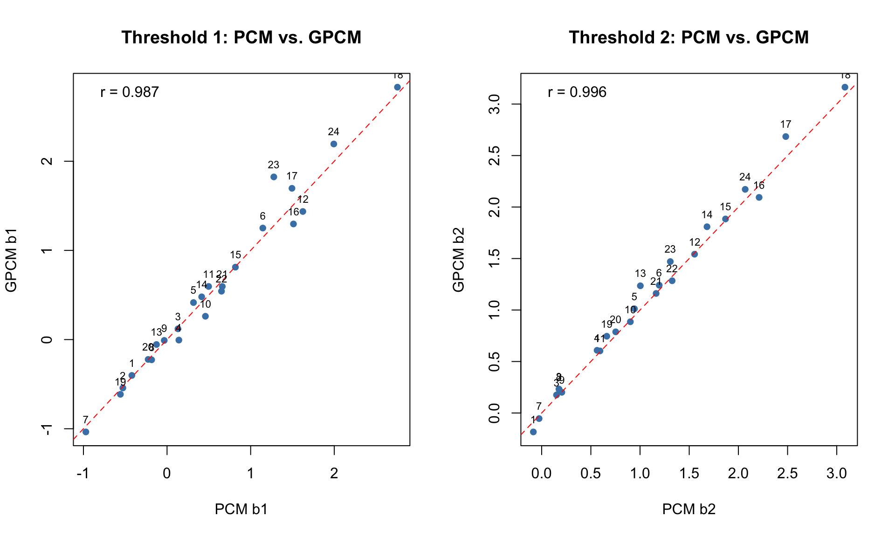
par(mfrow = c(1, 1))par(mfrow = c(1, 2))
# Compare GPCM vs GRM thresholds
plot(gpcm_pars[, "b1"], grm_pars[, "b1"],
xlab = "GPCM b1", ylab = "GRM b1",
main = "Threshold 1: GPCM vs. GRM", pch = 16, col = "darkorange")
abline(0, 1, lty = 2, col = "red")
text(gpcm_pars[, "b1"], grm_pars[, "b1"], labels = 1:24, pos = 3, cex = 0.7)
plot(gpcm_pars[, "b2"], grm_pars[, "b2"],
xlab = "GPCM b2", ylab = "GRM b2",
main = "Threshold 2: GPCM vs. GRM", pch = 16, col = "darkorange")
abline(0, 1, lty = 2, col = "red")
text(gpcm_pars[, "b2"], grm_pars[, "b2"], labels = 1:24, pos = 3, cex = 0.7)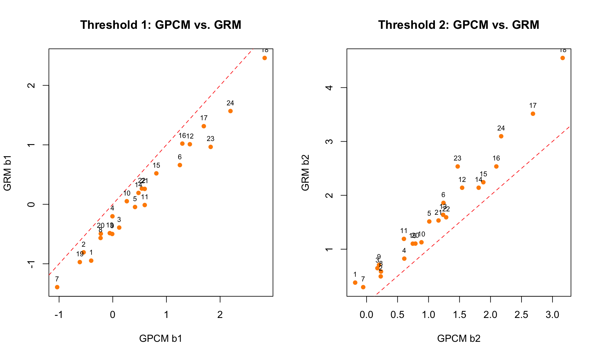
par(mfrow = c(1, 1))Notice that the GPCM and GRM thresholds may not align closely on the identity line. This is expected because they represent different quantities: Andrich thresholds (adjacent category crossover) vs. Thurstonian thresholds (cumulative 50% point).
# Q1: Which items require the most verbal aggression?
# Use GRM b2 (threshold for "yes") as the benchmark
cat("Items requiring the MOST verbal aggression (highest b2, GRM):\n")Items requiring the MOST verbal aggression (highest b2, GRM):top5 <- head(order(grm_pars[, "b2"], decreasing = TRUE), 5)
for (i in top5) {
cat(sprintf(" Item %d (%s): b2 = %.2f\n", i, names(d)[i], grm_pars[i, "b2"]))
} Item 18 (i18_store_do_shout): b2 = 4.55
Item 17 (i17_store_want_shout): b2 = 3.51
Item 24 (i24_call_do_shout): b2 = 3.10
Item 16 (i16_store_do_scold): b2 = 2.54
Item 23 (i23_call_want_shout): b2 = 2.54cat("\nItems requiring the LEAST verbal aggression (lowest b2, GRM):\n")
Items requiring the LEAST verbal aggression (lowest b2, GRM):bot5 <- head(order(grm_pars[, "b2"]), 5)
for (i in bot5) {
cat(sprintf(" Item %d (%s): b2 = %.2f\n", i, names(d)[i], grm_pars[i, "b2"]))
} Item 7 (i7_train_want_curse): b2 = 0.30
Item 1 (i1_bus_want_curse): b2 = 0.38
Item 2 (i2_bus_do_curse): b2 = 0.50
Item 8 (i8_train_do_curse): b2 = 0.58
Item 3 (i3_bus_want_scold): b2 = 0.65# Q2: Threshold distances for want vs. do items
pcm_dist <- pcm_pars[, "b2"] - pcm_pars[, "b1"]
want_items <- seq(1, 23, 2) # odd items
do_items <- seq(2, 24, 2) # even items
boxplot(pcm_dist[want_items], pcm_dist[do_items],
names = c("Want", "Do"), col = c("lightblue", "salmon"),
main = "PCM Threshold Distances: Want vs. Do Items",
ylab = "b2 - b1")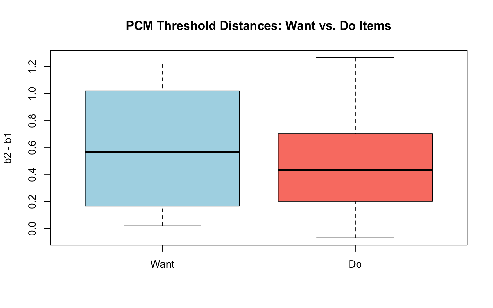
cat("Mean threshold distance (Want):", round(mean(pcm_dist[want_items]), 3), "\n")Mean threshold distance (Want): 0.599 cat("Mean threshold distance (Do):", round(mean(pcm_dist[do_items]), 3), "\n")Mean threshold distance (Do): 0.494 # Q3: Other-to-blame vs. self-to-blame
other_items <- c(1:12) # bus and train
self_items <- c(13:24) # store and call
# Average item location across models
pcm_locs <- rowMeans(pcm_pars[, 2:3])
boxplot(pcm_locs[other_items], pcm_locs[self_items],
names = c("Other to blame\n(bus, train)", "Self to blame\n(store, call)"),
col = c("lightblue", "salmon"),
main = "PCM Item Locations: Blame Attribution",
ylab = "Average threshold location")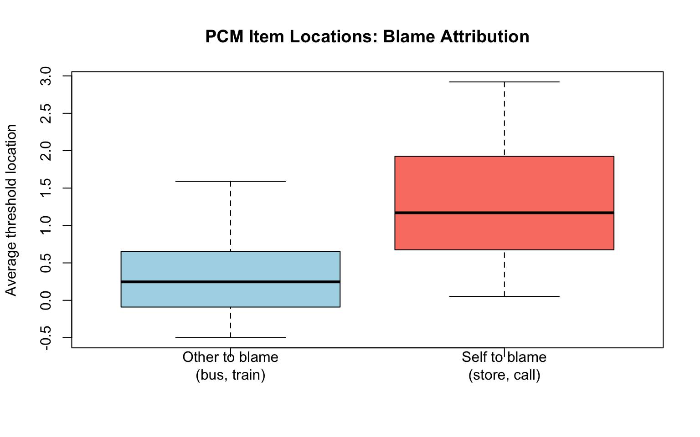
cat("Mean location (Other to blame):", round(mean(pcm_locs[other_items]), 3), "\n")Mean location (Other to blame): 0.355 cat("Mean location (Self to blame):", round(mean(pcm_locs[self_items]), 3), "\n")Mean location (Self to blame): 1.261 The Nominal Response Model (Bock, 1972) does not assume any ordering of the response categories. Instead, it estimates separate slope (\(a_k\)) and intercept (\(c_k\)) parameters for each category:
\[P(X_{ij} = k \mid \theta_j) = \frac{\exp(a_{ik}\theta_j + c_{ik})}{\sum_{r=0}^{m}\exp(a_{ir}\theta_j + c_{ir})}\]
The NRM is the most general model: all other polytomous models can be expressed as special cases with constraints on the \(a_k\) and \(c_k\) parameters.
When is the NRM useful?
The mirt package uses a reparameterized version of the NRM that separates an overall item discrimination from empirically derived category weights.
nrm <- mirt(d, 1, itemtype = "nominal")nrm_pars_irt <- coef(nrm, IRTpars = TRUE, simplify = TRUE)$items
knitr::kable(round(nrm_pars_irt, 3),
caption = "NRM Parameter Estimates (IRT parameterization)")| a1 | a2 | a3 | c1 | c2 | c3 | |
|---|---|---|---|---|---|---|
| i1_bus_want_curse | -0.792 | -0.020 | 0.812 | -0.263 | 0.059 | 0.205 |
| i2_bus_do_curse | -1.282 | 0.216 | 1.065 | -0.430 | 0.306 | 0.125 |
| i3_bus_want_scold | -1.012 | -0.065 | 1.077 | 0.139 | 0.030 | -0.169 |
| i4_bus_do_scold | -1.708 | 0.300 | 1.408 | 0.200 | 0.268 | -0.469 |
| i5_bus_want_shout | -0.896 | 0.139 | 0.757 | 0.475 | 0.138 | -0.613 |
| i6_bus_do_shout | -0.997 | 0.300 | 0.697 | 1.101 | -0.146 | -0.955 |
| i7_train_want_curse | -0.883 | -0.004 | 0.887 | -0.626 | 0.285 | 0.341 |
| i8_train_do_curse | -1.261 | 0.284 | 0.977 | -0.176 | 0.152 | 0.024 |
| i9_train_want_scold | -1.006 | 0.164 | 0.842 | 0.005 | 0.056 | -0.061 |
| i10_train_do_scold | -1.622 | 0.303 | 1.319 | 0.620 | 0.214 | -0.834 |
| i11_train_want_shout | -0.850 | -0.037 | 0.887 | 0.517 | 0.009 | -0.526 |
| i12_train_do_shout | -1.168 | 0.261 | 0.908 | 1.645 | -0.147 | -1.498 |
| i13_store_want_curse | -0.657 | 0.033 | 0.624 | 0.229 | 0.274 | -0.503 |
| i14_store_do_curse | -0.884 | 0.222 | 0.662 | 0.738 | 0.292 | -1.030 |
| i15_store_want_scold | -1.027 | 0.169 | 0.858 | 1.128 | 0.273 | -1.401 |
| i16_store_do_scold | -1.169 | 0.092 | 1.076 | 1.844 | 0.245 | -2.089 |
| i17_store_want_shout | -0.931 | -0.253 | 1.183 | 1.918 | 0.523 | -2.441 |
| i18_store_do_shout | -1.126 | -0.344 | 1.471 | 3.288 | 0.653 | -3.940 |
| i19_call_want_curse | -0.774 | 0.067 | 0.707 | -0.147 | 0.334 | -0.187 |
| i20_call_do_curse | -1.048 | 0.323 | 0.724 | 0.009 | 0.261 | -0.270 |
| i21_call_want_scold | -1.163 | 0.253 | 0.910 | 0.802 | 0.105 | -0.907 |
| i22_call_do_scold | -1.193 | 0.133 | 1.060 | 0.892 | 0.233 | -1.125 |
| i23_call_want_shout | -0.694 | 0.040 | 0.654 | 1.161 | -0.093 | -1.068 |
| i24_call_do_shout | -0.870 | 0.038 | 0.832 | 1.939 | -0.034 | -1.905 |
nrm_pars_def <- coef(nrm, simplify = TRUE)$items
knitr::kable(round(nrm_pars_def, 3),
caption = "NRM Parameter Estimates (mirt default parameterization)")| a1 | ak0 | ak1 | ak2 | d0 | d1 | d2 | |
|---|---|---|---|---|---|---|---|
| i1_bus_want_curse | 0.802 | 0 | 0.963 | 2 | 0 | 0.322 | 0.468 |
| i2_bus_do_curse | 1.174 | 0 | 1.276 | 2 | 0 | 0.736 | 0.555 |
| i3_bus_want_scold | 1.044 | 0 | 0.906 | 2 | 0 | -0.109 | -0.307 |
| i4_bus_do_scold | 1.558 | 0 | 1.289 | 2 | 0 | 0.068 | -0.669 |
| i5_bus_want_shout | 0.827 | 0 | 1.252 | 2 | 0 | -0.337 | -1.088 |
| i6_bus_do_shout | 0.847 | 0 | 1.532 | 2 | 0 | -1.247 | -2.056 |
| i7_train_want_curse | 0.885 | 0 | 0.993 | 2 | 0 | 0.911 | 0.967 |
| i8_train_do_curse | 1.119 | 0 | 1.380 | 2 | 0 | 0.327 | 0.200 |
| i9_train_want_scold | 0.924 | 0 | 1.267 | 2 | 0 | 0.052 | -0.065 |
| i10_train_do_scold | 1.471 | 0 | 1.309 | 2 | 0 | -0.405 | -1.454 |
| i11_train_want_shout | 0.869 | 0 | 0.936 | 2 | 0 | -0.508 | -1.043 |
| i12_train_do_shout | 1.038 | 0 | 1.376 | 2 | 0 | -1.791 | -3.142 |
| i13_store_want_curse | 0.641 | 0 | 1.078 | 2 | 0 | 0.045 | -0.732 |
| i14_store_do_curse | 0.773 | 0 | 1.430 | 2 | 0 | -0.447 | -1.768 |
| i15_store_want_scold | 0.942 | 0 | 1.270 | 2 | 0 | -0.855 | -2.529 |
| i16_store_do_scold | 1.123 | 0 | 1.123 | 2 | 0 | -1.599 | -3.934 |
| i17_store_want_shout | 1.057 | 0 | 0.641 | 2 | 0 | -1.395 | -4.359 |
| i18_store_do_shout | 1.298 | 0 | 0.603 | 2 | 0 | -2.635 | -7.228 |
| i19_call_want_curse | 0.741 | 0 | 1.136 | 2 | 0 | 0.481 | -0.041 |
| i20_call_do_curse | 0.886 | 0 | 1.548 | 2 | 0 | 0.251 | -0.279 |
| i21_call_want_scold | 1.036 | 0 | 1.366 | 2 | 0 | -0.697 | -1.709 |
| i22_call_do_scold | 1.126 | 0 | 1.177 | 2 | 0 | -0.658 | -2.017 |
| i23_call_want_shout | 0.674 | 0 | 1.090 | 2 | 0 | -1.255 | -2.230 |
| i24_call_do_shout | 0.851 | 0 | 1.067 | 2 | 0 | -1.973 | -3.844 |
The key to interpreting the NRM is the order of the slope parameters (\(a_k\)). If the slopes are in ascending order across categories (i.e., \(a_0 < a_1 < a_2\)), this confirms that the categories are ordered as expected on the latent trait.
# Check whether the category slope parameters (ak0, ak1, ak2) are ordered for each item.
# Note: the mirt default NRM output also contains an overall slope column (a1) that must
# be excluded — only the ak columns represent the category-specific scoring functions.
cat("Checking category ordering via NRM slope parameters (ak0, ak1, ak2):\n\n")Checking category ordering via NRM slope parameters (ak0, ak1, ak2):nrm_coefs <- coef(nrm, simplify = TRUE)$items
ak_cols <- grep("^ak", colnames(nrm_coefs)) # ak0, ak1, ak2 only
n_disordered <- 0
for (i in 1:24) {
ak_vals <- nrm_coefs[i, ak_cols]
if (!all(diff(ak_vals) > 0)) {
n_disordered <- n_disordered + 1
cat(sprintf(" Item %d (%s): ak values = %s — NOT in expected order\n",
i, names(d)[i], paste(round(ak_vals, 3), collapse = ", ")))
}
}
if (n_disordered == 0) {
cat("All 24 items have ak slope parameters in ascending order (ak0 < ak1 < ak2),\n")
cat("confirming the expected no < perhaps < yes ordering for every item.\n")
}All 24 items have ak slope parameters in ascending order (ak0 < ak1 < ak2),
confirming the expected no < perhaps < yes ordering for every item.# Cross-check using the IRT parameterization (a1 < a2 < a3)
cat("\nCross-check via IRT parameterization (a1, a2, a3):\n")
Cross-check via IRT parameterization (a1, a2, a3):nrm_irt <- coef(nrm, IRTpars = TRUE, simplify = TRUE)$items
a_irt_cols <- grep("^a", colnames(nrm_irt))
n_disordered_irt <- 0
for (i in 1:24) {
a_vals <- nrm_irt[i, a_irt_cols]
if (!all(diff(a_vals) > 0)) {
n_disordered_irt <- n_disordered_irt + 1
cat(sprintf(" Item %d (%s): a values = %s — NOT in expected order\n",
i, names(d)[i], paste(round(a_vals, 3), collapse = ", ")))
}
}
if (n_disordered_irt == 0) {
cat("All 24 items confirmed: a1 < a2 < a3 in the IRT parameterization as well.\n")
}All 24 items confirmed: a1 < a2 < a3 in the IRT parameterization as well.plot(nrm, type = "trace", which.items = c(7, 8),
theta_lim = c(-4, 4), par.settings = simpleTheme(lwd = 2),
main = "NRM Category Response Curves: Item 7 vs. Item 8")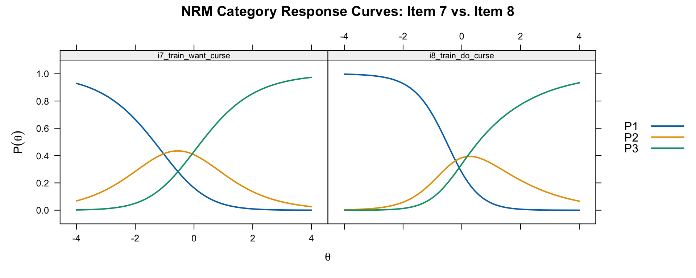
The NRM curves will generally look similar to the GPCM curves for items where the category ordering is confirmed. The NRM is more flexible, however, because it does not impose any ordering constraint.
Following the approach from the NRM lecture notes:
Note: Just because the \(a\) values are ordered does not guarantee that the thresholds will be ordered (Bock, 1972).
summary_df <- data.frame(
Model = c("PCM", "GPCM", "RSM", "GRM", "NRM"),
Family = c("Adjacent", "Adjacent", "Adjacent", "Cumulative", "Nominal"),
Discrimination = c("Fixed (=1)", "Item-specific", "Fixed (=1)",
"Item-specific", "Category-specific"),
Thresholds = c("Item-specific", "Item-specific", "Common across items",
"Item-specific", "Not directly estimated"),
`Threshold Type` = c("Andrich", "Andrich", "Andrich",
"Thurstonian", "Derived from a/c"),
`Reversals Possible` = c("Yes", "Yes", "Yes", "No (by construction)", "N/A"),
`Sufficient Statistics` = c("Yes", "No", "Yes", "No", "No"),
check.names = FALSE
)
knitr::kable(summary_df, caption = "Comparison of Polytomous IRT Models")| Model | Family | Discrimination | Thresholds | Threshold Type | Reversals Possible | Sufficient Statistics |
|---|---|---|---|---|---|---|
| PCM | Adjacent | Fixed (=1) | Item-specific | Andrich | Yes | Yes |
| GPCM | Adjacent | Item-specific | Item-specific | Andrich | Yes | No |
| RSM | Adjacent | Fixed (=1) | Common across items | Andrich | Yes | Yes |
| GRM | Cumulative | Item-specific | Item-specific | Thurstonian | No (by construction) | No |
| NRM | Nominal | Category-specific | Not directly estimated | Derived from a/c | N/A | No |
Start with the PCM if you have no strong prior about item discrimination. The PCM is the most flexible Rasch-family model and allows you to examine threshold ordering as a diagnostic tool.
Try the RSM if all items share the same response format. Test whether the RSM constraint holds using a likelihood ratio test against the PCM.
Use the GPCM or GRM if there is evidence that items differ substantially in discrimination and you are willing to give up sufficient statistics. Remember that the GPCM thresholds are Andrich thresholds; the GRM is a cumulative model, so it has Thurstonian thresholds.
Use the NRM to empirically test whether response categories are ordered as intended, or when categories are truly nominal.
Always examine fit plots — no single fit statistic tells the whole story. Compare category response curves across models to see where they agree and disagree.